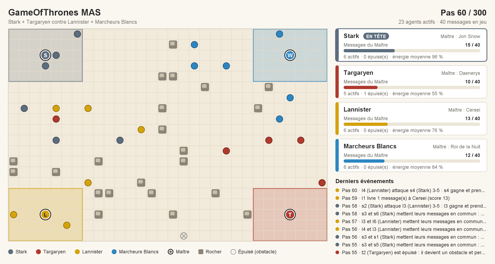
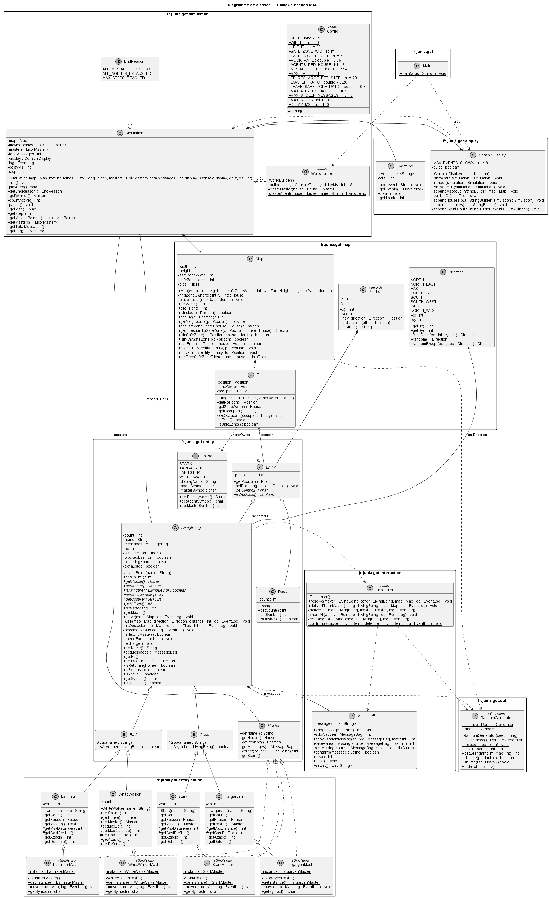
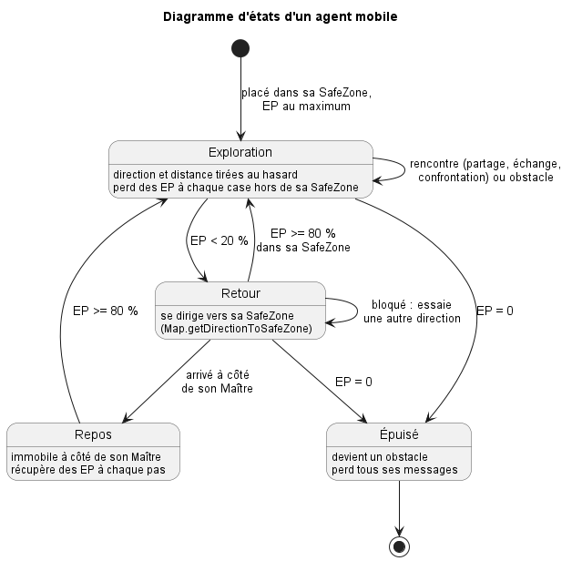
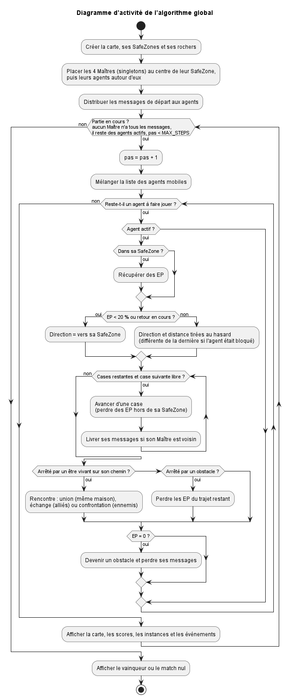

Le système multi-agents (SMA) simule, sur une carte en deux dimensions, quatre maisons de l'univers Game of Thrones.
Chaque maison possède un Maître immobile au centre de sa SafeZone et six agents mobiles qui parcourent la carte
pour collecter des messages et les lui rapporter. Au départ, chaque maison reçoit 10 messages distincts (40 au total,
de STARK-01 à WHITE_WALKER-10). La maison gagnante est la plus « sage » : celle dont le Maître détient le plus de messages distincts.
| Maison | Alliance | Maître (singleton) | SafeZone | Distance max. | EP max. | Attaque / Défense |
|---|---|---|---|---|---|---|
Stark s | Good (Libération) | Jon Snow S | haut gauche | 2 cases | 100 | 2 / 3 |
Targaryen t | Good (Libération) | Daenerys T | bas droite | 4 cases | 100 | 3 / 1 |
Lannister l | Bad (Domination) | Cersei L | bas gauche | 3 cases | 100 | 2 / 3 |
Marcheurs Blancs w | Bad (Domination) | Roi de la Nuit W | haut droite | 2 cases | 150 | 2 / 2 |
Les deux alliances reprennent le schéma du sujet (Good / Bad). L'alliance Domination est une alliance de circonstance :
les Lannister ignorent la menace du Nord pour écraser les Stark. Les profils sont volontairement contrastés (les dragons Targaryen vont loin mais
se défendent mal, les Marcheurs Blancs sont lents mais infatigables) pour que le polymorphisme ait un effet visible sur la partie.
Map, Tile, Position, Direction)x et un indice vertical y. Chaque case contient au plus une entité (rocher ou être vivant).Map.canEnter).Map.getNeighbours(p) renvoie les cases voisines, diagonales comprises : 3 dans un coin, 5 sur un bord, 8 ailleurs (testé par MapTest).
Map.getDirectionToSafeZone(p, house) renvoie la direction à prendre pour rejoindre sa SafeZone.Simulation, LivingBeing.move)move(). Chaque action s'applique immédiatement, avant l'agent suivant.lastDirection.x), ne bouge plus et perd tous ses messages.Encounter, MessageBag)MessageBag refuse les doublons : chaque ajout vérifie d'abord que le message n'existe pas déjà (testé par MessageBagTest).La partie s'arrête quand un Maître détient les 40 messages, quand plus aucun agent n'est actif (condition ajoutée) ou après 300 pas.
Le Maître qui a le plus de messages gagne ; une égalité en tête donne un match nul. Tous les réglages sont centralisés dans Config.
Tous les attributs sont privés et ne sont accessibles que par des méthodes. L'état d'un agent (ep, returningHome,
exhausted, blockedLastTurn) ne change qu'à l'intérieur de LivingBeing, par des méthodes privées comme
spendEp() ou recharge() qui bornent les EP entre 0 et le maximum. La cohérence entre une case et son occupant est
garantie par Map : Tile.setOccupant() est de visibilité paquetage et Map.moveEntity() est la seule méthode qui
déplace une entité en jeu. Les listes exposées le sont en lecture seule (Collections.unmodifiableList), et Position est un
record immuable.
La hiérarchie suit l'énoncé sur quatre niveaux : Entity (tout ce qui occupe une case) → LivingBeing (messages, EP,
dernière direction) → alliance Good / Bad → maison Stark, Targaryen, Lannister,
WhiteWalker → Maître (StarkMaster, …). Le Maître est donc bien une spécialisation de son groupe, comme le demande
le sujet. Rock hérite aussi d'Entity : rochers et agents épuisés sont traités de la même manière par la carte.
Entity, LivingBeing, Good et Bad sont abstraites ; l'interface Master regroupe ce
que partagent les quatre Maîtres (collecte et score, en méthodes par défaut).
Le moteur ne connaît que le type LivingBeing : il appelle move() sans savoir quelle maison joue. La liaison dynamique
choisit à l'exécution la distance, le coût, l'attaque et la défense redéfinis par chaque maison, ainsi que isAlly() redéfinie par
chaque alliance. Les Maîtres redéfinissent move() pour rester immobiles et getSymbol() pour s'afficher en majuscule.
// Simulation.playStep()
RandomGenerator.getInstance().shuffle(movingBeings);
for (LivingBeing being : movingBeings) {
if (being.isActive()) {
being.move(map, log); // liaison dynamique
}
}// Targaryen : les dragons vont loin
@Override protected int getMaxDistance() { return 4; }
@Override public int getAttack() { return 3; }
@Override public int getDefense() { return 1; }
// Bad : définition de l'alliance
@Override public boolean isAlly(LivingBeing o) {
return o instanceof Bad; }Le même mécanisme sert à la carte (Entity.getSymbol(), isObstacle()) et à l'affichage (interface Display, ci-dessous).
Chaque classe concrète possède un compteur private static int count incrémenté dans son constructeur : Rock,
LivingBeing (tous les êtres) et chacune des quatre maisons (Maître compris, puisqu'il en hérite). Ces compteurs sont affichés à chaque pas :
Instances (Maître compris) : Stark 7 | Targaryen 7 | Lannister 7 | Marcheurs 7 | êtres vivants 28 | rochers 27.
Chaque maison n'a qu'un seul Maître : le constructeur est privé, l'instance unique est un attribut statique créé au premier appel de
getInstance(). Toute tentative de new StarkMaster() est refusée à la compilation, et les agents retrouvent leur Maître
par getMaster() sans qu'on ait à leur passer une référence. Le patron intervient dans les quatre classes demandées.
public final class StarkMaster extends Stark implements Master {
private static StarkMaster instance;
private StarkMaster() { super("Jon Snow"); } // impossible d'en créer un second
public static StarkMaster getInstance() {
if (instance == null) { instance = new StarkMaster(); }
return instance;
}
@Override public void move(Map map, EventLog log) { } // le Maître reste immobile
}
RandomGenerator, la classe dédiée aux nombres pseudo-aléatoires exigée par le sujet, est aussi un singleton : toute la partie
(rochers, ordre des agents, directions, distances, échanges, dés) dépend d'une seule graine. Une même graine rejoue exactement la même partie
(--seed N), ce qui a rendu le débogage et l'équilibrage reproductibles.
Simulation reçoit un objet Display (showIntro, render, showResult) sans savoir
s'il s'agit de ConsoleDisplay (ASCII) ou de SwingDisplay (fenêtre graphique). On change d'affichage au lancement
(--gui) sans toucher au moteur. La fenêtre dessine une copie figée de l'état (StepSnapshot) pour ne jamais lire un état
en cours de modification par le thread de simulation.
Toutes les classes, avec tous leurs attributs et méthodes et leur visibilité
(+ public, - privé, # protégé, ~ paquetage ; membres statiques soulignés).
L'image est en haute définition (6960 × 3174 px) : zoomer dans le PDF pour lire le détail. Source PlantUML : docs/uml/classDiagram.puml.


Un agent démarre en Exploration, EP au maximum. Sous 20 % d'EP il passe en Retour et suit
getDirectionToSafeZone() ; s'il est bloqué, il essaie une autre direction. Arrivé à côté de son Maître, il se met en
Repos et recharge ses EP. Il ne repart en exploration qu'au-dessus de 80 %. Dans tous les états mobiles, une chute à 0 EP le fait
passer définitivement à l'état Épuisé : il devient un obstacle et perd ses messages.
Ces états correspondent aux attributs privés de LivingBeing : returningHome, exhausted
et la position par rapport au Maître (isNextToMaster()).
Le diagramme d'activité (à droite) contient les deux boucles demandées par le sujet :
Simulation.run), qui tourne tant qu'aucune condition de fin n'est atteinte et
affiche la carte, les scores, les instances et les événements après chaque pas ;LivingBeing.walk), qui fait avancer l'agent case par case et s'arrête sur
une rencontre, un obstacle ou un épuisement.Entre les deux, la liste des agents est mélangée à chaque pas : l'ordre de jeu change toujours.

La console affiche à chaque pas la carte en ASCII (majuscule = Maître, minuscule = agent, x = épuisé, # = rocher,
, = SafeZone), un tableau par maison (score, agents actifs et épuisés, EP moyens), les compteurs d'instances et le journal des
événements (partages, échanges, confrontations avec les dés, livraisons, épuisements), avec une pause de 150 ms entre deux pas. La fenêtre
graphique ajoute la pause, le pas à pas et un curseur de vitesse. Sur 60 parties (graines 1 à 60, une JVM par partie) :
| Maison | Victoires | Score moyen /40 | Agents épuisés en fin de partie (moy. /6) |
|---|---|---|---|
| Stark | 18 | 32,7 | 1,6 |
| Lannister | 17 | 31,7 | 2,5 |
| Marcheurs Blancs | 12 | 31,1 | 0,6 |
| Targaryen | 10 | 29,3 | 3,8 |
| 3 matchs nuls · 20 parties terminées par la collecte des 40 messages, 40 par la limite de 300 pas (durée moyenne 276 pas, minimum 143). | |||
Aucune maison ne domine. Les Targaryen, qui vont loin et dépensent beaucoup, s'épuisent le plus : leur avantage de mobilité est compensé par le coût en EP, ce qui montre l'effet des redéfinitions polymorphes sur l'équilibre.
| Exigence | Réalisation dans le code | Statut |
|---|---|---|
| SMA à pas constant, ordre aléatoire à chaque pas | Simulation.playStep() + RandomGenerator.shuffle() | Fait |
| Carte n × m, SafeZones < 50 %, obstacles, voisins 3/5/8, direction vers la SafeZone | Map : 23 % de SafeZones, rochers aléatoires, getNeighbours, getDirectionToSafeZone | Fait |
| Règles d'EP (20 %, retour, 0 EP = obstacle, blocage) | LivingBeing.move / walk / hitObstacle | Fait |
| Rencontres sur le chemin, union sans doublon, échange, confrontation hors SafeZone | Encounter, MessageBag | Fait |
| Encapsulation, héritage, polymorphisme | Sections 3 et 5 | Fait |
| Attributs statiques pour compter les instances | Compteurs dans Rock, LivingBeing et les 4 maisons | Fait |
| Singleton dans 4 classes | Les 4 Maîtres (+ RandomGenerator) | Fait |
| Classe dédiée aux nombres pseudo-aléatoires | RandomGenerator, graine unique et paramétrable | Fait |
| Représentation graphique, maximum d'infos par pas | Console ASCII + fenêtre Swing | Fait |
| UML : classes complet, états, activité | docs/uml/*.puml (sections 5 et 6) | Fait |
| Bonus : second patron · statistiques multi-parties | Stratégie (Display) · 60 graines, lancées une par une (pas de mode « campagne » dans le code) | Fait / partiel |
| Bonus : événements aléatoires, plus court chemin, 3D, agents coordonnés | Non réalisés | Non |
Limites relevées. Après une rencontre, l'agent ne mémorise pas de blocage et peut retenter la même direction au tour suivant. Le retour vers la SafeZone suit une direction « à vol d'oiseau », sans contourner les rochers (d'où l'intérêt du bonus plus court chemin). Les tests unitaires couvrent la carte et le sac de messages, mais pas encore les rencontres ni le cycle des EP. Les Maîtres, singletons, ne peuvent pas être réinitialisés : plusieurs parties dans une même JVM demanderaient une méthode de remise à zéro.
Le travail a été découpé en petites demandes de fusion (une fonctionnalité par pull request), compilées et testées par la CI avant intégration sur la branche principale.